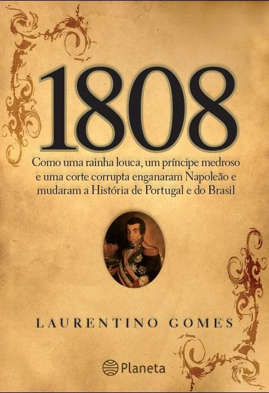

O Ladrão de Raios (Vol 1)
 ⠀⠀⠀⠀⠀⠀⠀⠀R$ 20,90⠀⠀⠀⠀Autor: Rick Riordan⠀⠀⠀⠀⠀Capa Comum⠀⠀⠀⠀-edição português⠀⠀⠀⠀Frete grátis nos seus cinco 1°s pedidos⠀⠀⠀⠀ Comprar ⠀⠀⠀⠀⠀⠀⠀⠀
⠀⠀⠀⠀⠀⠀⠀⠀R$ 20,90⠀⠀⠀⠀Autor: Rick Riordan⠀⠀⠀⠀⠀Capa Comum⠀⠀⠀⠀-edição português⠀⠀⠀⠀Frete grátis nos seus cinco 1°s pedidos⠀⠀⠀⠀ Comprar ⠀⠀⠀⠀⠀⠀⠀⠀
Sinopse
Em O ladrão de raios, Percy Jackson, o menino que aos doze anos descobre que é um semideus, filho de Poseidon, precisa impedir uma guerra entre os deuses que destruiria a civilização ocidental; em O Mar de Monstros, ele e os amigos se envolvem em uma perigosa aventura para defender o acampamento dos semideuses; em A maldição do titã, Percy descobre que o Senhor dos Titãs despertou e está disposto a destruir a humanidade; em A batalha do Labirinto, o semideus vai combater o perigoso titã no temido Labirinto de Dédalo; e em O último olimpiano, Percy tem que lidar não só com o exército de Cronos, mas também com a chegada de seu décimo sexto aniversário — e, assim, com a profecia que determinará seu destino.⠀⠀⠀⠀⠀⠀
Fazendo meu Filme 1
 ⠀⠀⠀⠀⠀⠀⠀⠀R$ 9,00⠀⠀⠀⠀Autor: Paula Pimenta⠀⠀⠀⠀⠀Capa Comum ⠀⠀⠀⠀-edição português⠀⠀⠀⠀Frete grátis nos seus cinco 1°s pedidos⠀⠀⠀⠀ Comprar ⠀⠀⠀⠀⠀⠀⠀⠀
⠀⠀⠀⠀⠀⠀⠀⠀R$ 9,00⠀⠀⠀⠀Autor: Paula Pimenta⠀⠀⠀⠀⠀Capa Comum ⠀⠀⠀⠀-edição português⠀⠀⠀⠀Frete grátis nos seus cinco 1°s pedidos⠀⠀⠀⠀ Comprar ⠀⠀⠀⠀⠀⠀⠀⠀
Sinopse
Fazendo meu filme é um livro encantador, daqueles que lemos compulsivamente e, quando terminamos, sentimos saudade. Não há como não se envolver com Fani, suas descobertas e seus anseios, típicos da adolescência. Uma história bem-humorada e divertida que conquista o leitor a cada página. Seja a relação com a família, consigo mesma e com o mundo; seja a convivência com as amigas, na escola e nas festas; seja a relação com seu melhor amigo e confidente. Tudo muda na vida de Estefânia quando surge a oportunidade de fazer um intercâmbio e morar um ano em outro país. As reveladoras conversas por telefone ou MSN e os constantes bilhetinhos durante a aula passam a ter outro assunto: a viagem que se aproxima. É sobre isto que trata este livro: o fascinante universo de uma menina cheia de expectativas, que vive a dúvida entre continuar sua rotina, com seus amigos, familiares, estudos e seu inesperado novo amor, ou se aventurar em outro país e mergulhar num mundo cheio de novas possibilidades. As melhores cenas da vida de Fani podem ainda estar por vir… ⠀⠀⠀⠀⠀⠀
1808
⠀⠀⠀⠀⠀⠀⠀⠀R$ 8,00⠀⠀⠀⠀Autor: Laurentino Gomes⠀⠀⠀⠀⠀Capa Comum ⠀⠀⠀⠀-edição português⠀⠀⠀⠀Frete grátis nos seus cinco 1°s pedidos⠀⠀⠀⠀ Comprar ⠀⠀⠀⠀⠀⠀⠀⠀
Sinopse
O propósito deste livro, resultado de dez anos de investigação jornalística, é resgatar e contar a história da corte lusitana no Brasil e tentar devolver seus protagonistas à dimensão mais correta possível dos papéis que desempenharam duzentos anos atrás. ´1808 - Como uma rainha louca, um príncipe medroso e uma corte corrupta enganaram Napoleão e mudaram a História de Portugal e do Brasil´ é o relato sobre um dos principais momentos históricos brasileiros. ⠀⠀⠀⠀⠀⠀
A Bolsa Amarela
 ⠀⠀⠀⠀⠀⠀⠀⠀R$ 13,90⠀⠀⠀⠀Autor: Lygia Bojunga⠀⠀⠀⠀⠀Capa Comum ⠀⠀⠀⠀-edição português⠀⠀⠀⠀Frete grátis nos seus cinco 1°s pedidos⠀⠀⠀⠀ Comprar ⠀⠀⠀⠀⠀⠀⠀⠀
⠀⠀⠀⠀⠀⠀⠀⠀R$ 13,90⠀⠀⠀⠀Autor: Lygia Bojunga⠀⠀⠀⠀⠀Capa Comum ⠀⠀⠀⠀-edição português⠀⠀⠀⠀Frete grátis nos seus cinco 1°s pedidos⠀⠀⠀⠀ Comprar ⠀⠀⠀⠀⠀⠀⠀⠀
Sinopse
Esta obra trata-se de um romance de uma menina que entra em conflito consigo mesma e com a família ao reprimir três grandes vontades (que ela esconde numa bolsa amarela) - a vontade de ser gente grande, a de ter nascido menino e a de se tornar escritora. A partir dessa revelação - por si mesma uma contestação à estrutura familiar tradicional em cujo meio ´criança não tem vontade´ - essa menina sensível e imaginativa nos conta o seu dia-a-dia, juntando o mundo real da família ao mundo criado por sua imaginação fértil e povoado de amigos secretos e fantasias.Ao mesmo tempo que se sucedem episódios reais e fantásticos, uma aventura espiritual se processa e a menina segue rumo à sua afirmação como pessoa..⠀⠀⠀⠀⠀⠀
O Alquimista
 ⠀⠀⠀⠀⠀⠀⠀⠀R$ 4,00⠀⠀⠀⠀Autor: Paulo Coelho⠀⠀⠀⠀⠀Capa Comum ⠀⠀⠀⠀-edição português⠀⠀⠀⠀Frete grátis nos seus cinco 1°s pedidos⠀⠀⠀⠀ Comprar ⠀⠀⠀⠀⠀⠀⠀⠀
⠀⠀⠀⠀⠀⠀⠀⠀R$ 4,00⠀⠀⠀⠀Autor: Paulo Coelho⠀⠀⠀⠀⠀Capa Comum ⠀⠀⠀⠀-edição português⠀⠀⠀⠀Frete grátis nos seus cinco 1°s pedidos⠀⠀⠀⠀ Comprar ⠀⠀⠀⠀⠀⠀⠀⠀
Sinopse
De tempos em tempos, surge um livro capaz de mudar para sempre a vida de seus leitores. O Alquimista é um deles. Com mais de 45 milhões de exemplares vendidos em todo o mundo, o mais famoso título de Paulo Coelho já se estabeleceu como um clássico moderno, atemporal e universal. Quase 25 anos após seu lançamento, segue fascinando públicos cada vez maiores, de diferentes gerações. Simples, sábia e inspiradora, esta história refaz os passos de um pastor da Andaluzia que viaja para o deserto egípcio em busca de um tesouro enterrado nas Pirâmides.O que começa como uma jornada para encontrar bens materiais torna-se uma descoberta das riquezas que escondemos dentro de nós mesmos. As belas lições que Santiago aprende ao longo do caminho nos falam da sabedoria de ouvir o que diz o coração, de ler os sinais com que deparamos ao longo da vida e, acima de tudo, de seguir os nossos sonhos.⠀⠀⠀⠀⠀⠀